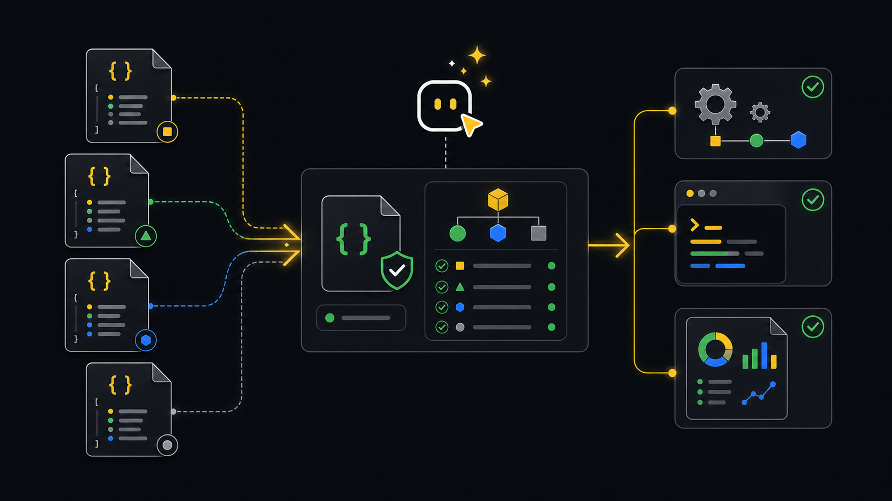

Contracts
Schema contracts.
Schemas describe the JSON shape produced by CLI commands so agents, CI jobs, and integrations can depend on fields instead of scraping terminal text.
What schemas do
A schema gives a stable contract for automation. For example, an incident watch job can read frame events, a report job can store a known report payload, and an agent can decide what to do next from a flow summary.
Workflow
- CommandRun JSON modeUse structured CLI output or save a JSON file.
- SchemaPick contractMatch the command output to the schema family.
- ParseRead fieldsUse fields like event, outcome, nextAction, totals, and paths.
- BranchDecide actionNotify, fail CI, create a report, or wait for approval.
- StoreKeep artifactsAttach JSON alongside human-readable output.
Agent and CI
Agents should ask for JSON when they need to reason over output. CI jobs should save the JSON as an artifact and fail on clear machine-readable conditions.
xyte-cli flow run flow.daily-deep-dive-report \
--tenant <tenant-id> \
--plan \
--strict-json \
--out-dir ./tmp/flow-runs
xyte-cli ops inspect fleet \
--tenant <tenant-id> \
--render json \
--strict-json \
--out ./artifacts/fleet.json
xyte-cli ops watch incidents \
--tenant <tenant-id> \
--profile incidents-active \
--once \
--strict-json \
--out ./artifacts/incidents.ndjsonCommon outputs
Start with the schema that matches the workflow you are automating.
doctor-environment.v1: choose installed, npx, workspace-local, or blocked setup mode.status.v1: read fast tenant readiness from jobs and agents.watch-frame.v1: react to incident snapshots, deltas, heartbeats, and errors.inspect-fleet.v1andinspect-deep-dive.v1: store operational source data for reports.report.v1: track generated report paths and report metadata.flow-run.v1: read flow outcome, next action, run bundle path, and pause state.utility-prepare.v1andutility-batch.v1: process prepared rows, rejected rows, and batch dispositions.
Real-life examples
Run doctor environment --format json, read the recommended mode, and fail when the mode is blocked.
Run incident watch with --strict-json, read snapshot or delta frames, and notify only when active incidents changed.
Generate a Markdown or PDF report from saved deep-dive JSON, then attach both files so readers can trace the numbers.
Read nextAction from a flow summary and use the bundle path in the approved resume command.
Schema links
These files are the public machine-readable contracts shipped with the docs.
- call-envelope.v1.schema.json
- doctor-environment.v1.schema.json
- flow-run.v1.schema.json
- headless-frame.v1.schema.json
- inspect-deep-dive.v1.schema.json
- inspect-fleet.v1.schema.json
- report.v1.schema.json
- status.v1.schema.json
- upgrade-check.v1.schema.json
- upgrade-result.v1.schema.json
- utility-batch.v1.schema.json
- utility-prepare.v1.schema.json
- watch-frame.v1.schema.json